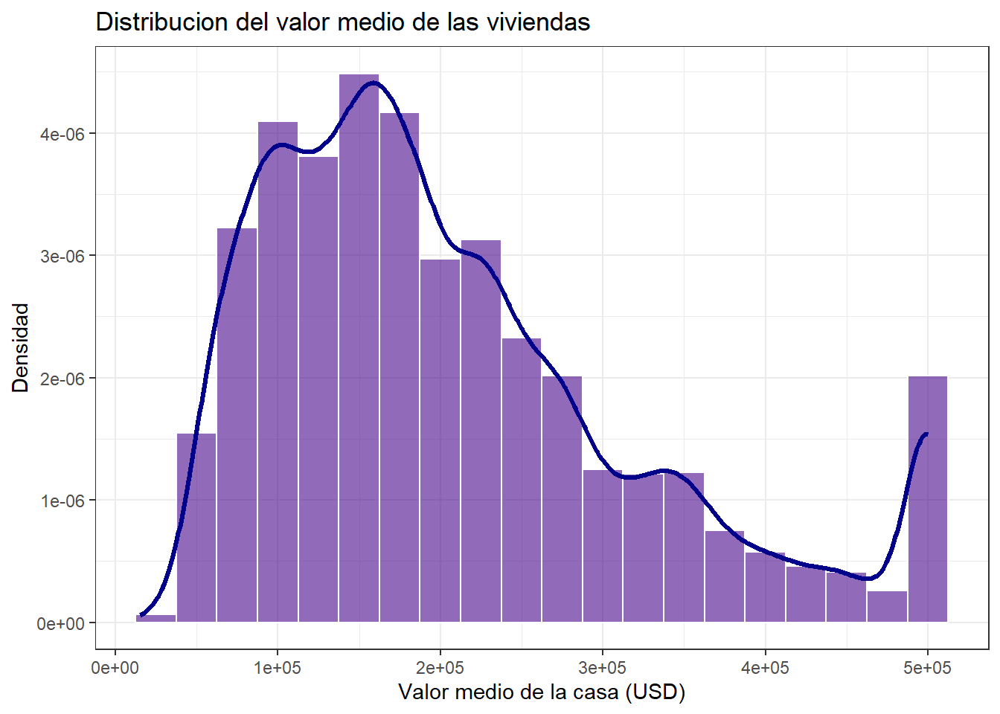
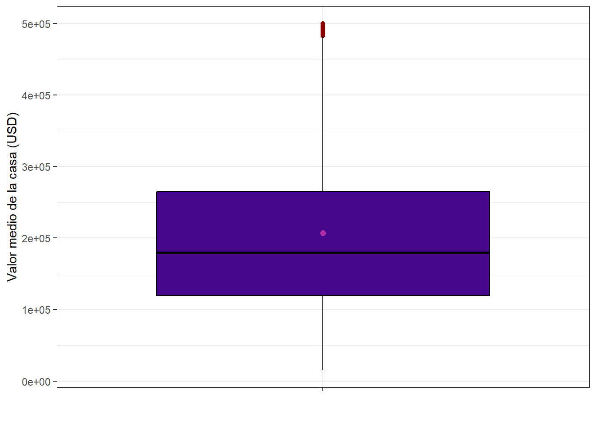
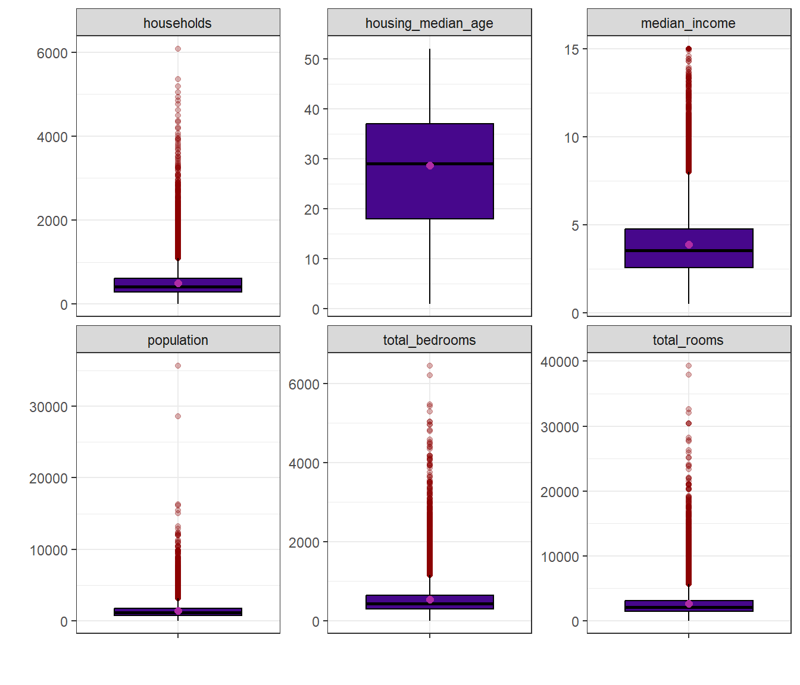
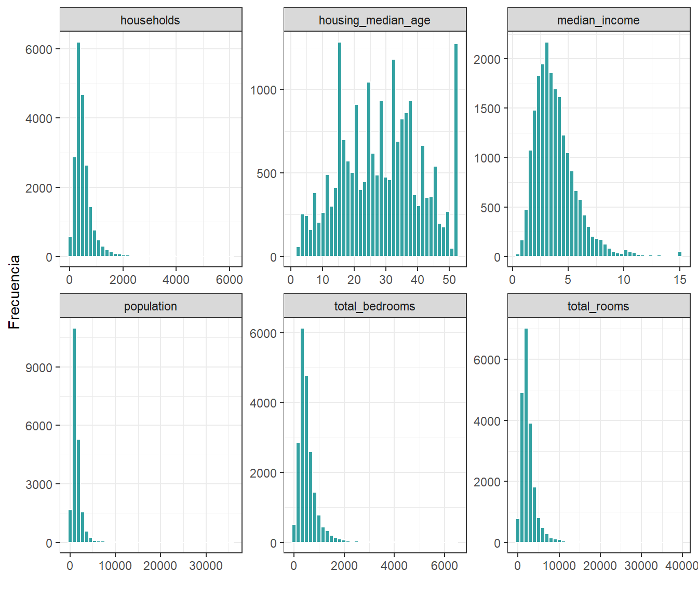
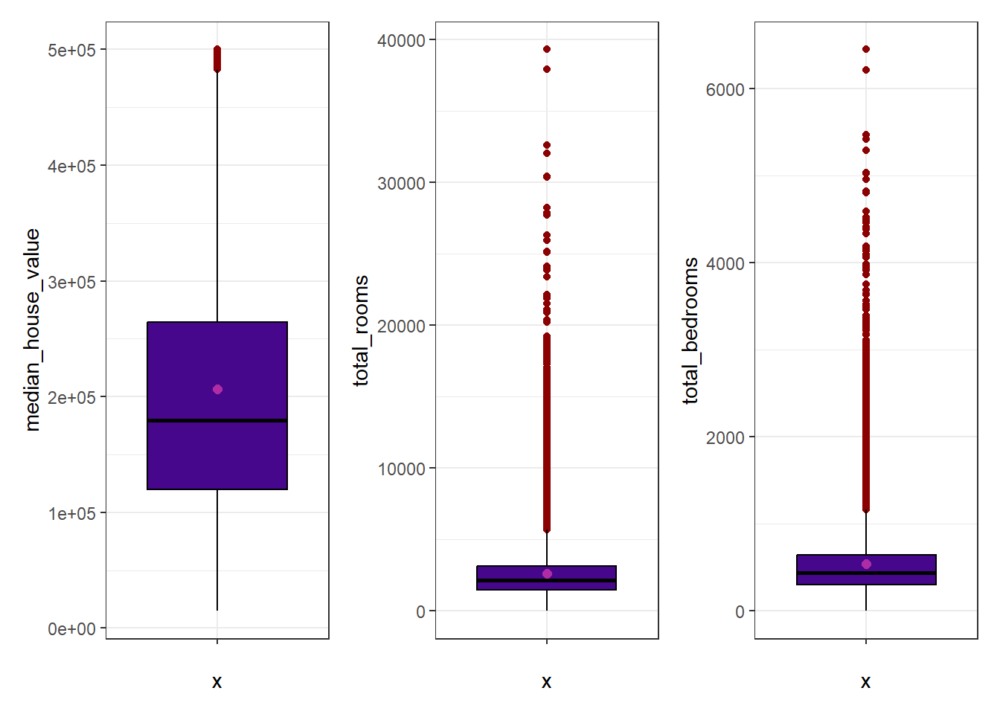
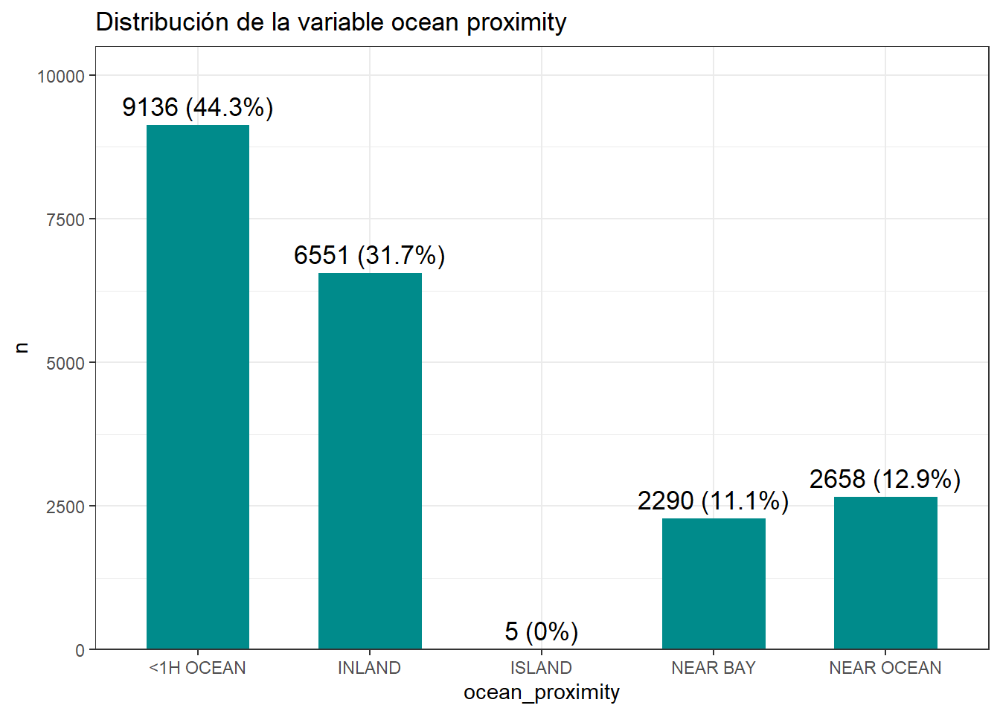
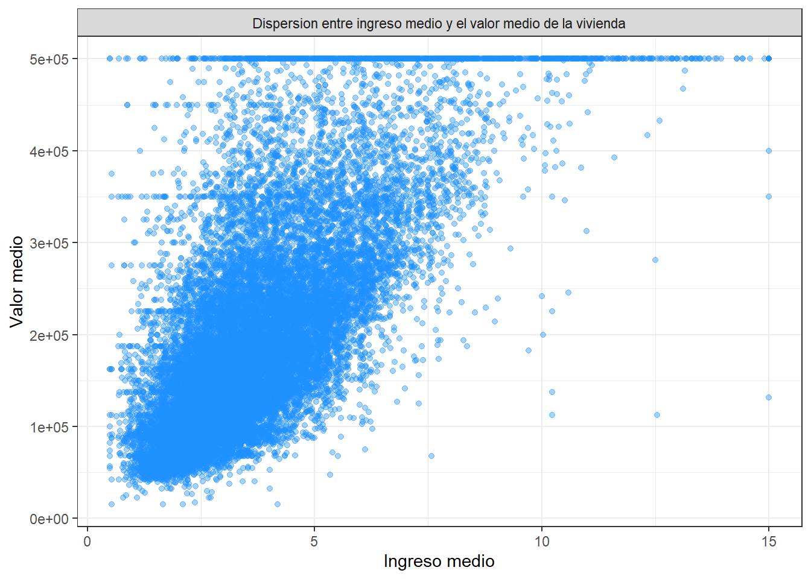
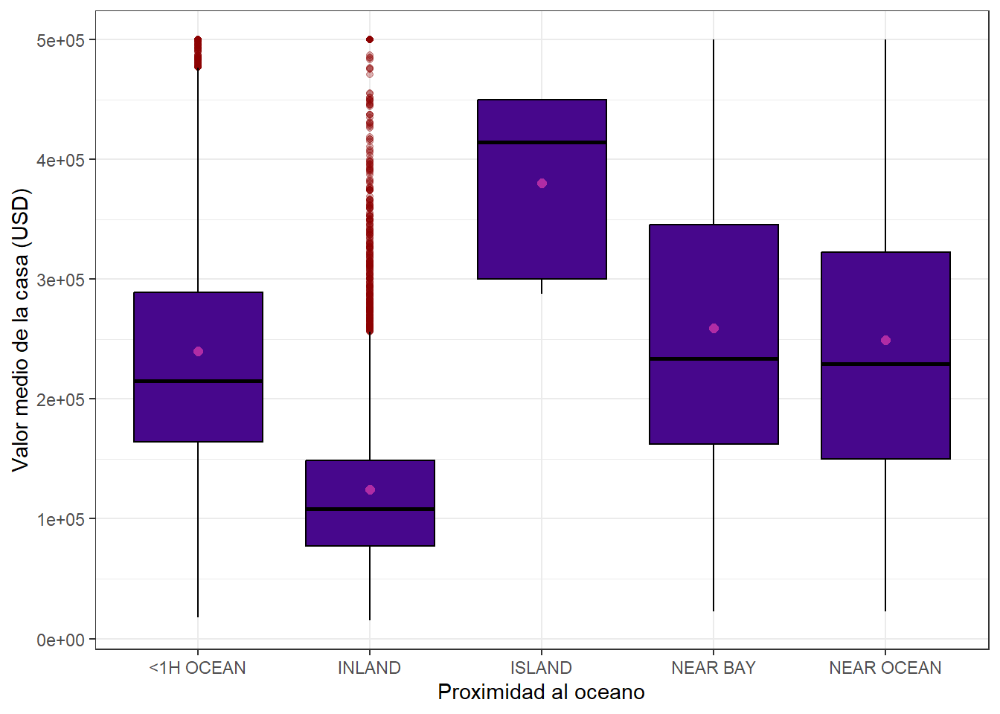
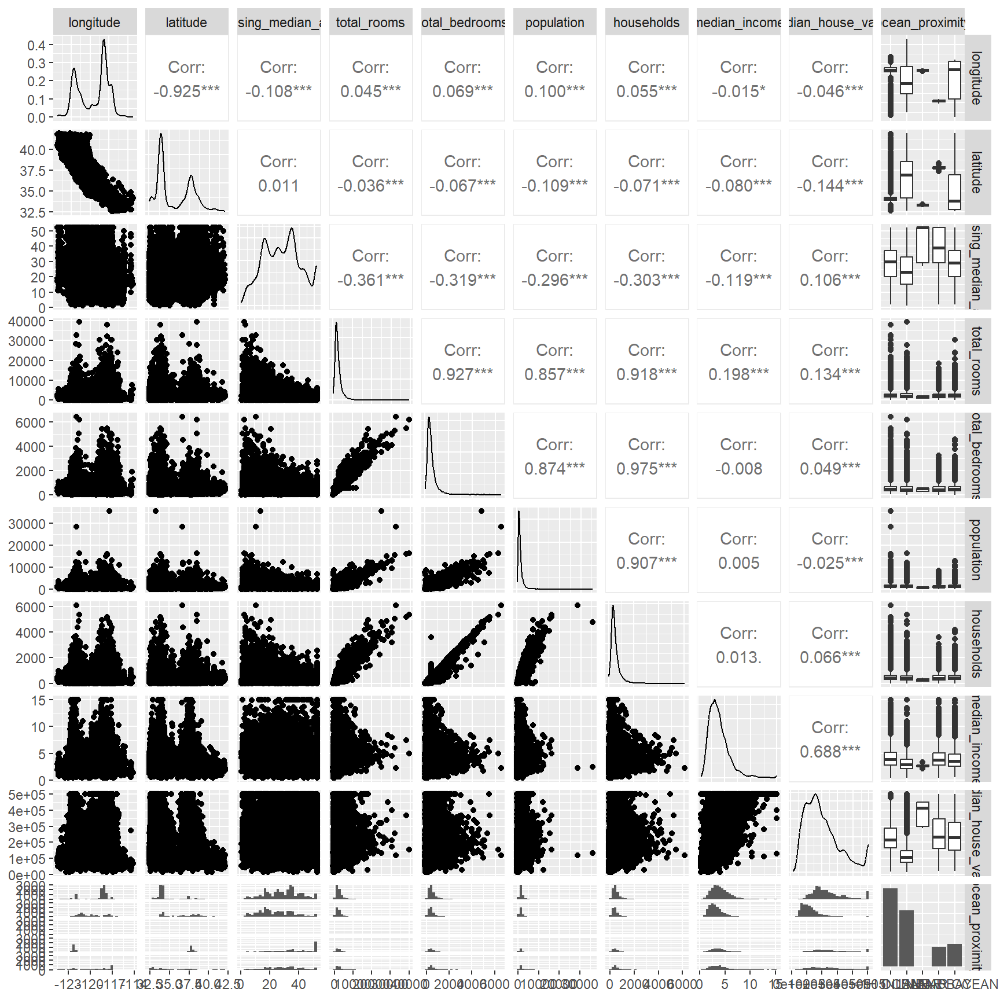

Capítulo 1 Análisis exploratorio de datos
Corresponde a la sección 3 del libro del profesor. Los datos son los precios de vivienda
del estado de California y la variable respuesta es median_house_value.
Muestrame las 5 primeras filas
## longitude latitude housing_median_age total_rooms total_bedrooms population
## 1 -122.23 37.88 41 880 129 322
## 2 -122.22 37.86 21 7099 1106 2401
## 3 -122.24 37.85 52 1467 190 496
## 4 -122.25 37.85 52 1274 235 558
## 5 -122.25 37.85 52 1627 280 565
## households median_income median_house_value ocean_proximity
## 1 126 8.3252 452600 NEAR BAY
## 2 1138 8.3014 358500 NEAR BAY
## 3 177 7.2574 352100 NEAR BAY
## 4 219 5.6431 341300 NEAR BAY
## 5 259 3.8462 342200 NEAR BAYlas estructura de los datos
## 'data.frame': 20640 obs. of 10 variables:
## $ longitude : num -122 -122 -122 -122 -122 ...
## $ latitude : num 37.9 37.9 37.9 37.9 37.9 ...
## $ housing_median_age: num 41 21 52 52 52 52 52 52 42 52 ...
## $ total_rooms : num 880 7099 1467 1274 1627 ...
## $ total_bedrooms : num 129 1106 190 235 280 ...
## $ population : num 322 2401 496 558 565 ...
## $ households : num 126 1138 177 219 259 ...
## $ median_income : num 8.33 8.3 7.26 5.64 3.85 ...
## $ median_house_value: num 452600 358500 352100 341300 342200 ...
## $ ocean_proximity : chr "NEAR BAY" "NEAR BAY" "NEAR BAY" "NEAR BAY" ...Datos faltantes
## NA_.longitude NA_.latitude NA_.housing_median_age NA_.total_rooms
## 1 0 0 0 0
## NA_.total_bedrooms NA_.population NA_.households NA_.median_income
## 1 207 0 0 0
## NA_.median_house_value NA_.ocean_proximity
## 1 0 0Otra forma de detectar valores faltantes

Los 207 faltantes están todos en total_bedrooms, que es el 1% de los registros. Como es
una proporción pequeña y la variable es numérica, imputar por la media no mueve casi nada
la distribución.
Ahora, hagamos la imputacion de datos faltantes
verifiquemos si tiene datos faltantes
## NA_.longitude NA_.latitude NA_.housing_median_age NA_.total_rooms
## 1 0 0 0 0
## NA_.total_bedrooms NA_.population NA_.households NA_.median_income
## 1 0 0 0 0
## NA_.median_house_value NA_.ocean_proximity
## 1 0 0vamos a convertir la variable ocean_proximity
1.1 Analisis exploratorio de median_house_value
(Target)
Realicemos el resumen estadistico de la variable
df %>% summarise(n = length(median_house_value),
media = mean(median_house_value),
sd = sd(median_house_value),
mediana = median(median_house_value),
RIC = IQR(median_house_value),
Q1 = quantile(median_house_value, 0.25),
Q3 = quantile(median_house_value, 0.75),
minimo = min(median_house_value),
maximo = max(median_house_value),
asimetria = skewness(median_house_value),
curtosis = kurtosis(median_house_value))## n media sd mediana RIC Q1 Q3 minimo maximo asimetria
## 1 20640 206855.8 115395.6 179700 145125 119600 264725 14999 500001 0.9776922
## curtosis
## 1 3.3275Centro de la distribución
La media es 206.855 y la mediana es 179.700. El dato clave aquí es que la media es bastante mayor que la mediana. Cuando eso pasa, significa que hay casas muy caras, mientras que la mitad de las casas valen 179.700 o menos.
Dispersión (qué tan regados están los datos)
La desviación estándar es 115.395, muy grande respecto a la media, los precios están muy dispersos, no concentrados. El RIC (rango intercuartílico, Q3−Q1) es 145.125. El 50% central de las casas cae entre Q1 = 119.600 y Q3 = 264.725.
Extremos
Mínimo 14.999 y máximo 500.001
Forma de la distribución
Asimetría = 0.98. Es positiva (sesgo a la derecha). Un valor cercano a 1 indica un sesgo moderado-alto. Esto es coherente con lo que veías en media > mediana. Curtosis = 3.33. Como el valor de referencia de una distribución normal es 3, la distribución está apenas por encima. Es ligeramente leptocúrtica
df %>%
ggplot(aes(x = median_house_value)) +
geom_histogram(aes(y = after_stat(density)),
binwidth = 25000,
fill = "#47078c",
color = "white",
alpha = 0.6) +
geom_density(color = "darkblue", linewidth = 1.2) +
labs(title = "Distribucion del valor medio de las viviendas",
x = "Valor medio de la casa (USD)",
y = "Densidad") +
theme_bw()
La distribución presenta un sesgo positivo (a la derecha): la mayor concentración de viviendas se ubica en valores bajos-medios, con una cola que se extiende hacia precios altos. Se observa además una acumulación anómala en el extremo derecho, atribuible al truncamiento de los datos en 500.000.
Los mercados inmobiliarios casi siempre son sesgados a la derecha: la mayoría de viviendas se concentra en un rango asequible-medio y una minoría de propiedades de lujo forma la cola. Que tu distribución empírica coincida con lo que la teoría económica predice es un buen cierre: los datos son consistentes con la realidad del fenómeno.
Sobre el truncamiento, vale la pena ponerle número:
df %>%
summarise(topes = sum(median_house_value >= 500001),
total = n(),
porcentaje = round(100 * topes / total, 2))## topes total porcentaje
## 1 965 20640 4.68Son 965 barrios, el 4,67% de la muestra, todos pegados en el mismo valor. Ese pico no es un comportamiento del mercado sino una limitación de cómo se recogieron los datos: a todo lo que valía más de medio millón le pusieron 500.001.
df %>%
ggplot(aes(x = "", y = median_house_value)) +
geom_boxplot(fill = "#47078c", color = "black",
outlier.color = "darkred") +
stat_summary(fun = mean, geom = "point", shape = 20,
size = 3, color = "#b02ca5") +
labs(x = "", y = "Valor medio de la casa (USD)") +
theme_bw()
El punto rosado es la media y está por encima de la línea de la mediana, que es la misma señal del sesgo a la derecha vista de otra forma.
1.2 Analisis de las variables independientes (Caracteristicas)
df %>%
select(where(is.numeric), -median_house_value) %>%
pivot_longer(
cols = everything(),
names_to = "variable",
values_to = "valor"
) %>%
group_by(variable) %>%
summarise(n = length(valor),
media = mean(valor),
sd = sd(valor),
mediana = median(valor),
RIC = IQR(valor),
Q1 = quantile(valor, 0.25),
Q3 = quantile(valor, 0.75),
minimo = min(valor),
maximo = max(valor),
asimetria = skewness(valor),
curtosis = kurtosis(valor))## # A tibble: 8 × 12
## variable n media sd mediana RIC Q1 Q3 minimo maximo
## <chr> <int> <dbl> <dbl> <dbl> <dbl> <dbl> <dbl> <dbl> <dbl>
## 1 househol… 20640 500. 3.82e2 409 3.25e2 280 605 1 6082
## 2 housing_… 20640 28.6 1.26e1 29 1.9 e1 18 37 1 52
## 3 latitude 20640 35.6 2.14e0 34.3 3.78e0 33.9 37.7 32.5 42.0
## 4 longitude 20640 -120. 2.00e0 -118. 3.79e0 -122. -118. -124. -114.
## 5 median_i… 20640 3.87 1.90e0 3.53 2.18e0 2.56 4.74 0.500 15.0
## 6 populati… 20640 1425. 1.13e3 1166 9.38e2 787 1725 3 35682
## 7 total_be… 20640 538. 4.19e2 438 3.46e2 297 643. 1 6445
## 8 total_ro… 20640 2636. 2.18e3 2127 1.70e3 1448. 3148 2 39320
## # ℹ 2 more variables: asimetria <dbl>, curtosis <dbl>1.2.1 Ejercicio 1. Gráficas e interpretación de las variables características
Enunciado. Realizar las gráficas de las otras variables, además la interpretación de la tabla y el gráfico quedan como ejercicio.
Sección 3.4.4 del libro del profesor
Solución. Interpretación de la tabla. Las ocho variables se dejan separar en tres grupos según lo que dicen la asimetría y la curtosis.
El primero es el de las variables de conteo: total_rooms, total_bedrooms,
population y households. Todas tienen media muy por encima de la mediana, asimetría
entre 3,4 y 4,9 y curtosis entre 25 y 76. Son distribuciones muy sesgadas a la derecha y
con colas pesadísimas. population es el caso extremo: la mediana es 1.166 habitantes
pero el máximo llega a 35.682, y la curtosis de 76,5 dice que ese máximo no es un caso
aislado sino que hay toda una cola de barrios enormes. Esto tiene sentido porque cada fila
es un bloque censal y los bloques no tienen el mismo tamaño.
El segundo es median_income y housing_median_age, que son variables ya resumidas por
barrio. El ingreso tiene asimetría 1,65 y curtosis 7,95, o sea sesgo a la derecha pero
mucho más suave que los conteos; además está truncado en 15, igual que el precio.
housing_median_age es la más simétrica de todas, con asimetría 0,06 y curtosis 2,2, y
tiene un tope artificial en 52 años.
El tercero es el par de coordenadas, latitude y longitude. Aquí la asimetría y la
curtosis no significan nada sustantivo porque no son magnitudes, son posiciones en el
mapa. La curtosis por debajo de 3 en ambas refleja que California es alargada y que los
barrios están repartidos en dos zonas densas, no que haya algo raro en los datos.
Vamos a ver las cajas de todas las variables características. Como están en escalas muy
distintas, no sirve ponerlas en un mismo eje, así que van con facet_wrap y escala libre.
df %>%
select(where(is.numeric), -median_house_value, -latitude, -longitude) %>%
pivot_longer(cols = everything(),
names_to = "variable",
values_to = "valor") %>%
ggplot(aes(x = "", y = valor)) +
geom_boxplot(fill = "#47078c", color = "black",
outlier.color = "darkred", outlier.alpha = 0.3) +
stat_summary(fun = mean, geom = "point", shape = 20,
size = 3, color = "#b02ca5") +
facet_wrap(~ variable, scales = "free_y", ncol = 3) +
labs(x = "", y = "") +
theme_bw()
Y los histogramas de las mismas variables:
df %>%
select(where(is.numeric), -median_house_value, -latitude, -longitude) %>%
pivot_longer(cols = everything(),
names_to = "variable",
values_to = "valor") %>%
ggplot(aes(x = valor)) +
geom_histogram(bins = 40, fill = "#008B8B", color = "white", alpha = 0.8) +
facet_wrap(~ variable, scales = "free", ncol = 3) +
labs(x = "", y = "Frecuencia") +
theme_bw()
Interpretación de los gráficos. Los cuatro conteos muestran la misma figura: caja
aplastada contra el eje y una nube larga de puntos rojos hacia arriba. Eso es exactamente
lo que anunciaban la asimetría y la curtosis de la tabla. En median_income la caja ya se
ve más centrada, pero se alcanza a notar la barra del tope en 15. housing_median_age es
la única cuya caja queda más o menos en la mitad del rango y casi sin puntos fuera, con la
barra alta del final que son las casas topeadas en 52 años.
Los tres boxplot que trae el profesor en su libro son un caso particular de esto, y se
arman con patchwork:
df %>%
ggplot(aes(x = "", y = median_house_value)) +
geom_boxplot(fill = "#47078c", color = "black",
outlier.color = "darkred") +
stat_summary(fun = mean, geom = "point", shape = 20,
size = 3, color = "#b02ca5") +
theme_bw() -> p1
df %>%
ggplot(aes(x = "", y = total_rooms)) +
geom_boxplot(fill = "#47078c", color = "black",
outlier.color = "darkred") +
stat_summary(fun = mean, geom = "point", shape = 20,
size = 3, color = "#b02ca5") +
theme_bw() -> p2
df %>%
ggplot(aes(x = "", y = total_bedrooms)) +
geom_boxplot(fill = "#47078c", color = "black",
outlier.color = "darkred") +
stat_summary(fun = mean, geom = "point", shape = 20,
size = 3, color = "#b02ca5") +
theme_bw() -> p3
p1 + p2 + p3
Ahora la única variable categórica del conjunto.
df %>%
count(ocean_proximity, name = "n") %>%
mutate(Porcentaje = round((n / sum(n)) * 100, 2),
Variable = "Ocean_proximity",
Categoria = as.character(ocean_proximity)) %>%
select(Variable, Categoria, n, Porcentaje) -> tabla_ocean
tabla_ocean## Variable Categoria n Porcentaje
## 1 Ocean_proximity <1H OCEAN 9136 44.26
## 2 Ocean_proximity INLAND 6551 31.74
## 3 Ocean_proximity ISLAND 5 0.02
## 4 Ocean_proximity NEAR BAY 2290 11.09
## 5 Ocean_proximity NEAR OCEAN 2658 12.88tabla_ocean_b <- df %>%
count(ocean_proximity, name = "n") %>%
mutate(Porcentaje = round((n / sum(n)) * 100, 1),
Etiqueta = paste0(n, " (", Porcentaje, "%)"))
tabla_ocean_b %>%
ggplot(aes(x = ocean_proximity, y = n)) +
geom_col(fill = "#008B8B", width = 0.6) +
geom_text(aes(label = Etiqueta), vjust = -0.5, size = 4.5) +
scale_y_continuous(expand = expansion(mult = c(0, 0.15))) +
labs(title = "Distribución de la variable ocean proximity",
x = "ocean_proximity", y = "n") +
theme_bw()
Casi la mitad de los barrios (44,26%) están a menos de una hora del océano y un tercio
(31,74%) son de tierra adentro. La categoría ISLAND tiene apenas 5 registros, el 0,02%,
así que cualquier promedio que se calcule ahí no es confiable y hay que decirlo cuando
aparezca en las comparaciones.
1.3 Analisis exploratorio bivariado
df %>%
ggplot(aes(x = median_income, y = median_house_value)) +
geom_point(alpha = 0.4, color = "#1E90FF") +
labs(y = "Valor medio",
x = "Ingreso medio") +
theme_bw() +
facet_grid(. ~ "Dispersion entre ingreso medio y el valor medio de la vivienda")
Se ve una relación positiva clara: a mayor ingreso medio del barrio, mayor valor de la vivienda. También se ve la línea horizontal de puntos en 500.001, que es otra vez el tope artificial, y unas líneas más tenues en 450.000 y 350.000.
1.3.1 Ejercicio 2. Diagramas de dispersión con las demás variables
Enunciado. Realiza los diagramas de dispersión de la variable median_house_value con respecto a las variables independientes que hacen falta.
Sección 3.4.5 del libro del profesor
Solución.
df %>%
select(where(is.numeric)) %>%
pivot_longer(cols = -median_house_value,
names_to = "variable",
values_to = "valor") %>%
ggplot(aes(x = valor, y = median_house_value)) +
geom_point(alpha = 0.15, color = "#1E90FF") +
geom_smooth(method = "lm", se = FALSE, color = "#47078c") +
facet_wrap(~ variable, scales = "free_x", ncol = 3) +
labs(x = "", y = "Valor medio de la casa (USD)") +
theme_bw()## `geom_smooth()` using formula = 'y ~ x'
Y el coeficiente de correlación de cada una con el precio, para ponerle número a lo que se ve:
df %>%
select(where(is.numeric)) %>%
summarise(across(-median_house_value,
~ cor(.x, median_house_value))) %>%
pivot_longer(everything(), names_to = "variable", values_to = "correlacion") %>%
arrange(desc(abs(correlacion)))## # A tibble: 8 × 2
## variable correlacion
## <chr> <dbl>
## 1 median_income 0.688
## 2 latitude -0.144
## 3 total_rooms 0.134
## 4 housing_median_age 0.106
## 5 households 0.0658
## 6 total_bedrooms 0.0495
## 7 longitude -0.0460
## 8 population -0.0246median_income es la única con una relación fuerte, r = 0,688. Las demás quedan por
debajo de 0,15 en valor absoluto, o sea que por sí solas casi no explican el precio. Los
cuatro conteos forman nubes pegadas al eje izquierdo porque están muy sesgados, y ahí la
correlación de Pearson no es una buena medida de la relación. latitude da −0,144 y esa
correlación tampoco hay que leerla como causa: lo que dice es que el norte y el sur de
California tienen precios distintos, no que la latitud haga subir el precio.
Ahora comparemos el valor medio de la vivienda segun la aproximidad al oceano
df %>%
group_by(ocean_proximity) %>%
summarise(n = length(median_house_value),
media = mean(median_house_value),
sd = sd(median_house_value),
mediana = median(median_house_value),
RIC = IQR(median_house_value),
Q1 = quantile(median_house_value, 0.25),
Q3 = quantile(median_house_value, 0.75),
minimo = min(median_house_value),
maximo = max(median_house_value),
asimetria = skewness(median_house_value),
curtosis = kurtosis(median_house_value))## # A tibble: 5 × 12
## ocean_proximity n media sd mediana RIC Q1 Q3 minimo maximo
## <fct> <int> <dbl> <dbl> <dbl> <dbl> <dbl> <dbl> <dbl> <dbl>
## 1 <1H OCEAN 9136 2.40e5 1.06e5 214850 125000 164100 289100 17500 500001
## 2 INLAND 6551 1.25e5 7.00e4 108500 71450 77500 148950 14999 500001
## 3 ISLAND 5 3.80e5 8.06e4 414700 150000 300000 450000 287500 450000
## 4 NEAR BAY 2290 2.59e5 1.23e5 233800 183200 162500 345700 22500 500001
## 5 NEAR OCEAN 2658 2.49e5 1.22e5 229450 172750 150000 322750 22500 500001
## # ℹ 2 more variables: asimetria <dbl>, curtosis <dbl>Veamos un grafico de caja y bigotes
df %>%
ggplot(aes(x = ocean_proximity, y = median_house_value)) +
geom_boxplot(fill = "#47078c", color = "black",
outlier.color = "darkred", outlier.alpha = 0.3) +
stat_summary(fun = mean, geom = "point", shape = 20,
size = 3, color = "#b02ca5") +
labs(x = "Proximidad al oceano", y = "Valor medio de la casa (USD)") +
theme_bw()
INLAND es el grupo claramente más barato, con mediana de 108.500 frente a 214.850 de
<1H OCEAN y 233.800 de NEAR BAY. Los tres grupos costeros se parecen bastante entre
sí. ISLAND aparece con la media más alta de todas, 380.440, pero son 5 barrios, así que
esa caja no se puede comparar con las otras.
1.3.2 Ejercicio 3. Errores del gráfico de ggpairs
Enunciado. Menciona los errores que puedes encontrar en el gráfico.
Sección 3.4.5 del libro del profesor
Solución. El gráfico en cuestión es este:
df %>%
select(median_house_value, median_income, housing_median_age,
total_rooms, population) %>%
ggpairs()
El primero es de legibilidad. Si se le pasa el df completo, ggpairs() arma una malla
de 10×10 con 20.640 puntos en cada panel; los ejes quedan ilegibles y el gráfico tarda
muchísimo en dibujarse. Por eso arriba se seleccionaron solo cinco variables.
El segundo es que mete longitude y latitude como si fueran variables cuantitativas
cualquiera. Calcula su media, su densidad y su correlación con el precio, y ninguna de
esas tres cosas significa algo: la media de una longitud es un punto en el mar y la
correlación entre latitud y precio no describe una relación lineal sino la geografía de
California. Esas dos variables se deberían ver en un mapa, no en un panel de dispersión.
El tercero es que las correlaciones que reporta son de Pearson, que supone relación lineal
y es muy sensible a los valores extremos. Con variables tan sesgadas como population o
total_rooms ese número subestima la asociación real. Para ese caso serviría más Spearman.
El cuarto es que el truncamiento de median_house_value en 500.001 contamina toda la fila
y toda la columna del target: la densidad muestra un pico falso al final y las nubes de
puntos muestran una línea horizontal que no es un patrón del mercado.
Y el quinto es que ggpairs() ignora ocean_proximity si no se incluye. Como ya vimos que
ese factor separa fuerte los precios, mirar solo las relaciones numéricas deja por fuera la
variable que más ordena el conjunto.